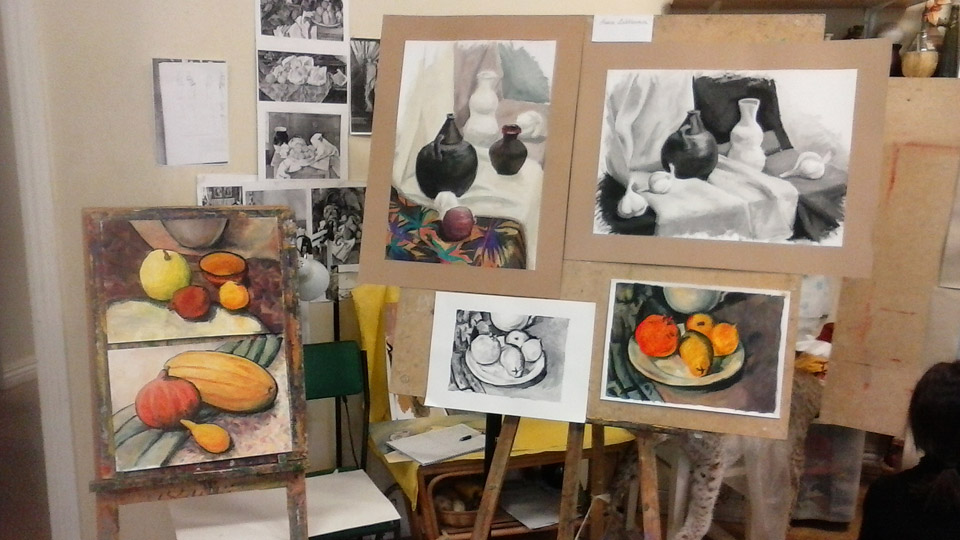

Sel aastal ma avastasin enda jaoks värvikontuuridega mandalate joonistamist. See on väga stressi vähendav loov protsess.

Kui ma õppisin rätsepaks ja modelleerijaks, siis meil oli maalimistunnid. Vahepeal käisin ka erinevatel kursustel, minu viimaseim kunstikooli külastamine oli 2014-2015 aastatel.

Suviti tegelen ka hennamaalingutega.

Aeg-ajalt meisterdan ka käsitööseepi, enda jaoks või tellimuse peale.